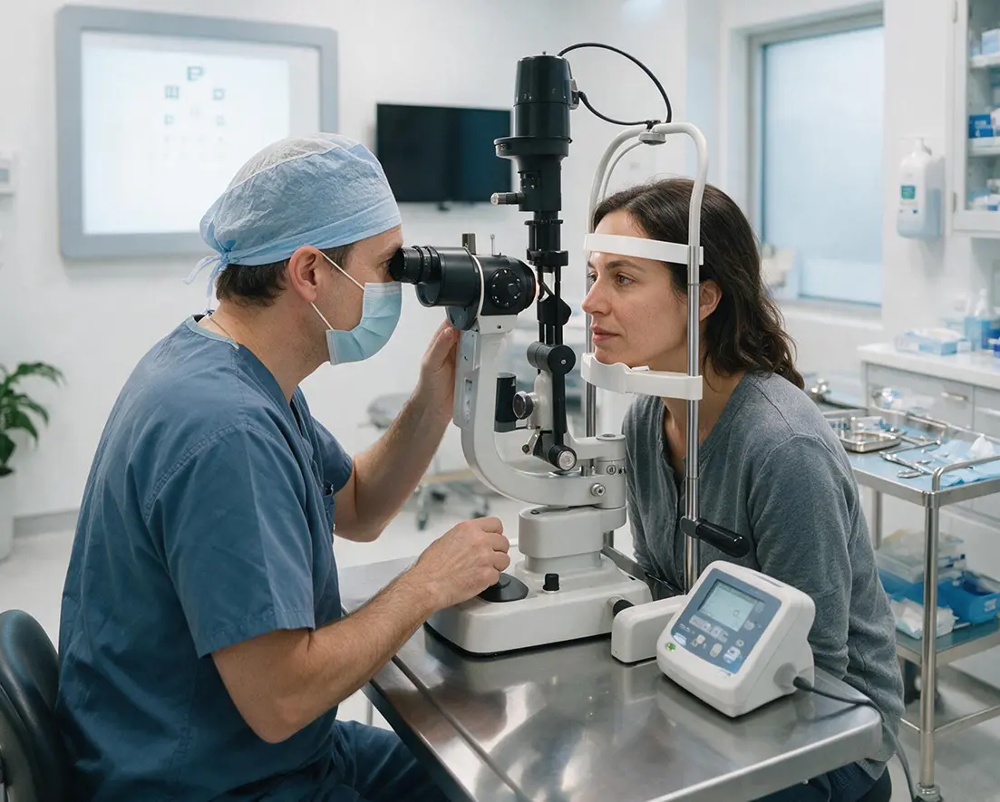

English
English Español
Español 简体中文
简体中文
Una Mejor Visión.
Viva la Vida con Claridad.
Atención oftalmológica y servicios estéticos de primer nivel, brindados con auténtica compasión — en dos cómodas ubicaciones del sur de California.
La Calidad de la Atención.
La Calidad del Trato Humano.
Somos un grupo de médicos y cirujanos oftalmólogos que ofrece diagnóstico y tratamiento de afecciones oftalmológicas de todo tipo, incluida la atención subespecializada en glaucoma y oculoplástica. Tratamos habitualmente el glaucoma, las enfermedades del párpado, la órbita y el sistema lagrimal, las cataratas, el ojo seco, el ojo rojo, la enfermedad ocular diabética y la degeneración macular.
En California Vision and Visage, nuestro objetivo es ofrecer atención oftalmológica profesional y de alta calidad, y hacer que su visita sea cómoda, agradable e informativa.
15+
Años Atendiendo el Sur de California
2
Médicos Certificados
2
Ubicaciones Convenientes

Lo Que Dicen Nuestros Pacientes
"Profesionales de principio a fin — personal amable y atento que de verdad escucha. El médico fue minucioso y se tomó el tiempo de explicarlo todo con claridad."
— Maria L. · Reseña de Google (5 estrellas)
"Estaba nervioso por mi cirugía de cataratas, pero todo el equipo me hizo sentir completamente tranquilo. Mi visión está mejor que en muchos años."
— James T. · Reseña de Yelp (5 estrellas)
Atención Oftalmológica y Estética de Vanguardia
Nuestros médicos cuentan con formación en subespecialidades y utilizan tecnologías diagnósticas y quirúrgicas de vanguardia para lograr resultados excelentes en todas las áreas de la salud ocular y la estética.


Aceptamos la Mayoría de los Planes Principales
Nuestro equipo de facturación verifica su cobertura y maximiza sus beneficios. Llámenos para confirmar su plan específico — estamos para ayudarle.
Antes de Su Visita
Descargue formularios, acceda a su expediente y encuentre todo lo que necesita para prepararse para su cita.
Nuestras Sedes
City of Industry
18575 Gale Ave, Suite 168
City of Industry, CA 91748
San Gabriel
7232 Rosemead Blvd, Suite 202
San Gabriel, CA 91775